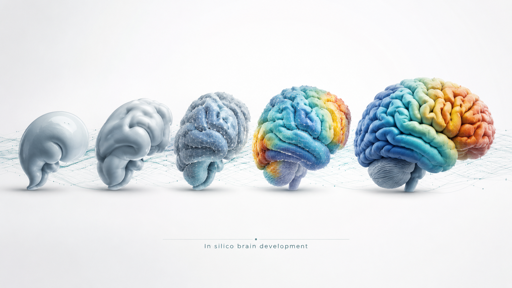
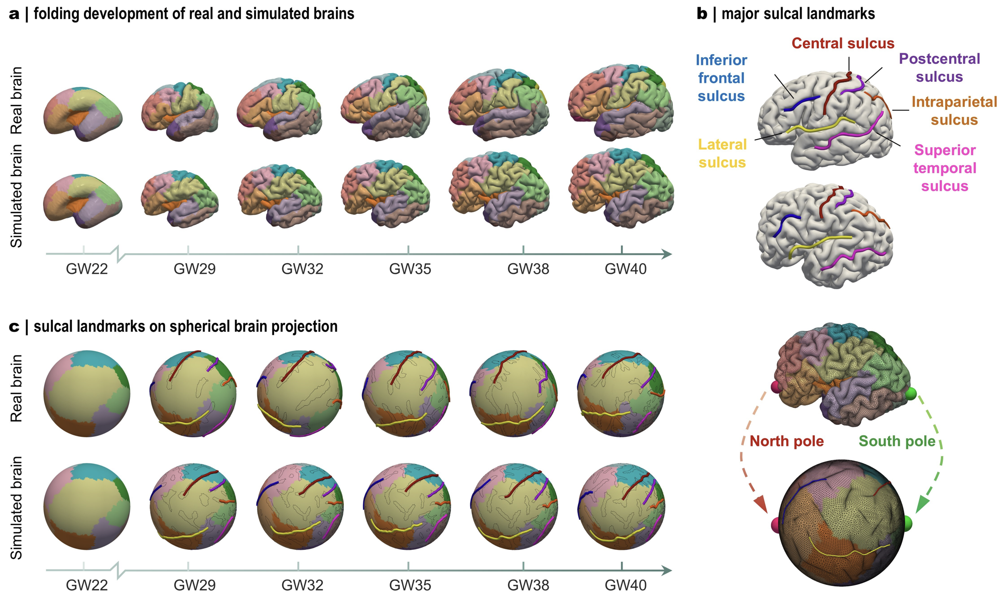
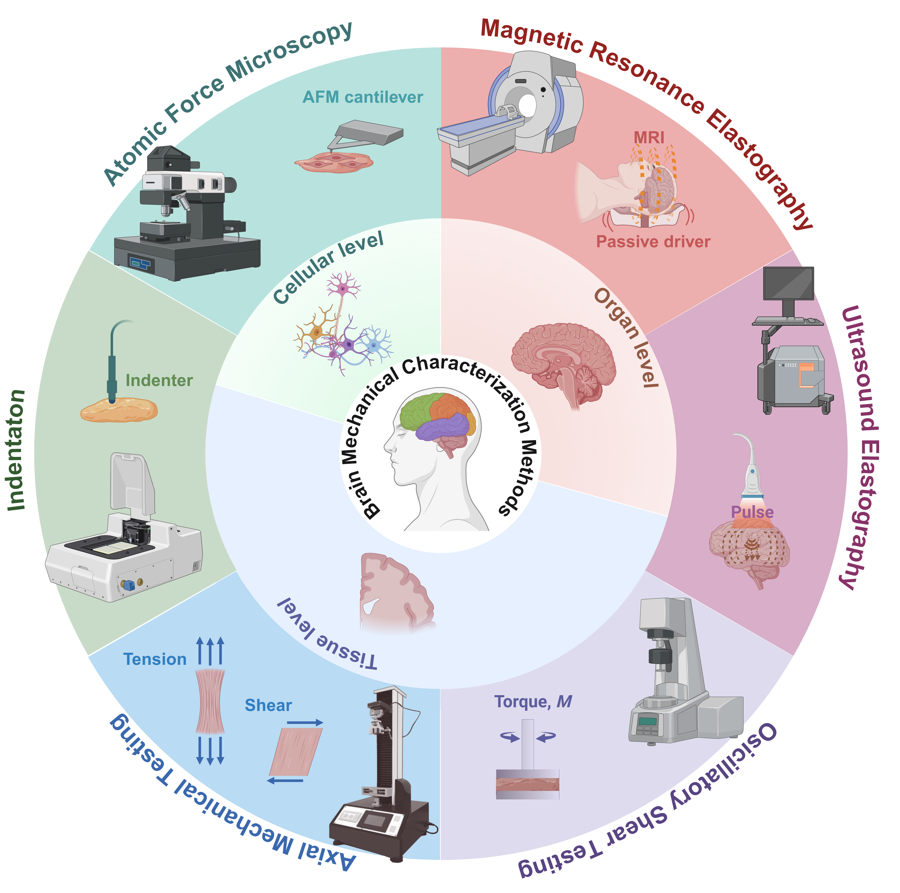
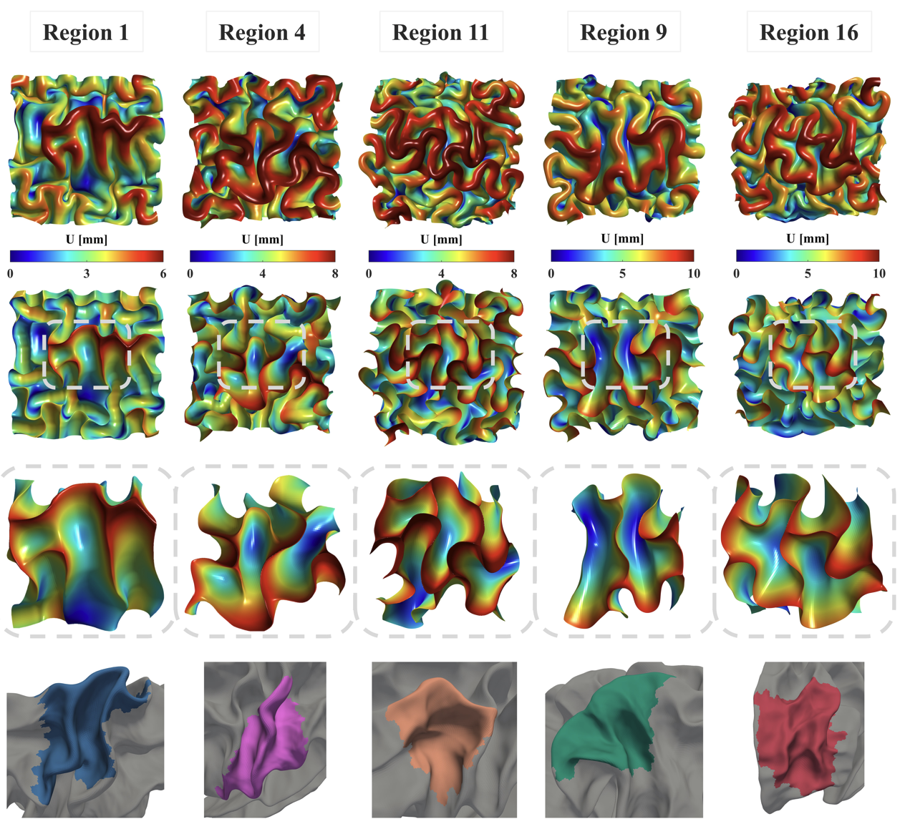
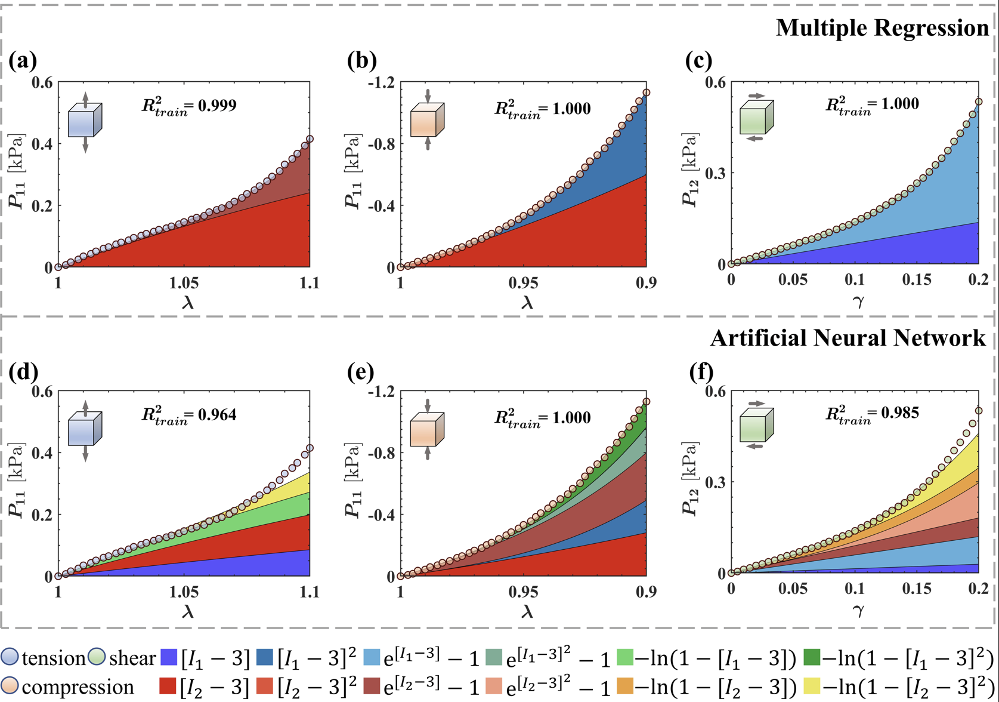
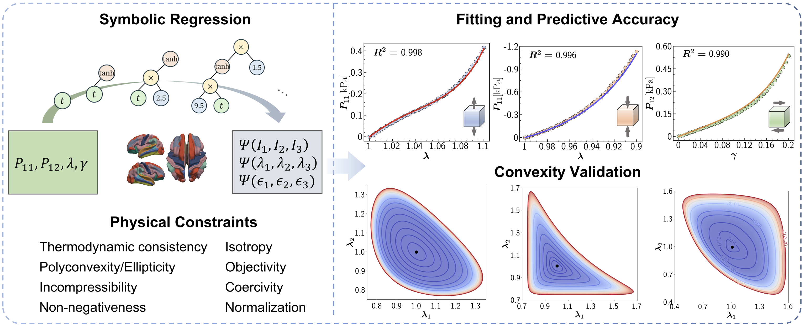
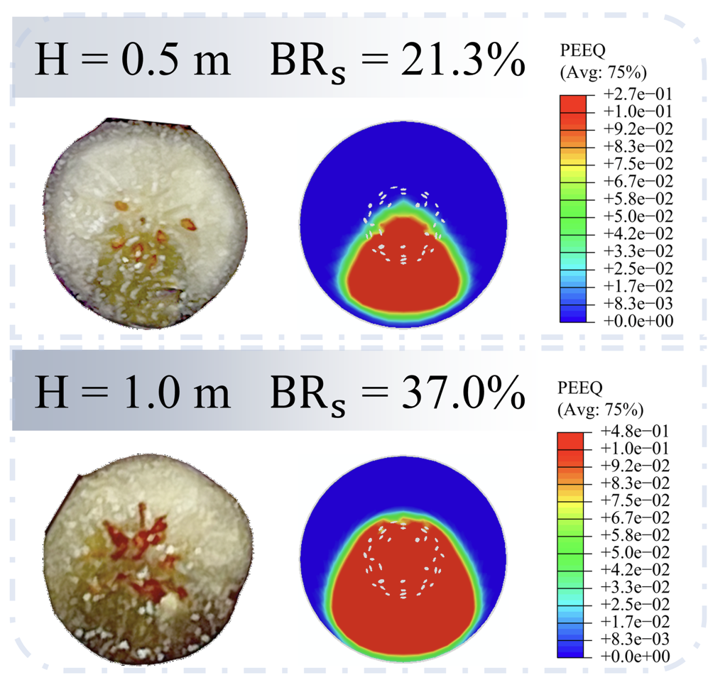

Developmental cortical mapping
Mapping spatially heterogeneous cortical growth from large-scale fetal and neonatal neuroimaging.
I combine developmental neuroimaging, computational mechanics, and interpretable AI to uncover the physical principles of human brain growth, folding, and development.

Three connected directions centered on understanding how the developing brain acquires its form.
Mapping spatially heterogeneous cortical growth from large-scale fetal and neonatal neuroimaging.
Building anatomically realistic finite-element models of cortical growth and folding.
Using machine learning and symbolic regression to discover compact, physics-compatible models.
First-author work is shown visually. The thumbnails are original website schematics and can be replaced with your actual paper figures in the local editor.

Jixin Hou, Zhengwang Wu, Kun Jiang, Taotao Wu, Lu Zhang, et al.
Imaging-informed, whole-brain biophysical modeling of prenatal cortical morphogenesis.

Jixin Hou, Kun Jiang, Arunachalam Ramanathan, et al.
A broad synthesis of experimental and imaging approaches for characterizing brain tissue mechanics.

Jixin Hou, Zhengwang Wu, Xianyan Chen, Li Wang, et al.
Regional growth laws derived from imaging improve mechanistic simulations of cortical folding.

Jixin Hou, Nicholas Filla, Xianyan Chen, Mir Jalil Razavi, et al.
Comparing interpretable regression and neural approaches for automated constitutive-model discovery.

Jixin Hou, Xianyan Chen, Taotao Wu, Ellen Kuhl, Xianqiao Wang
Symbolic regression discovers interpretable hyperelastic models directly from mechanical data.

Jixin Hou, Bosoon Park, Changying Li, Xianqiao Wang
Multiscale finite-element modeling links fruit microstructure, impact conditions, and bruising.